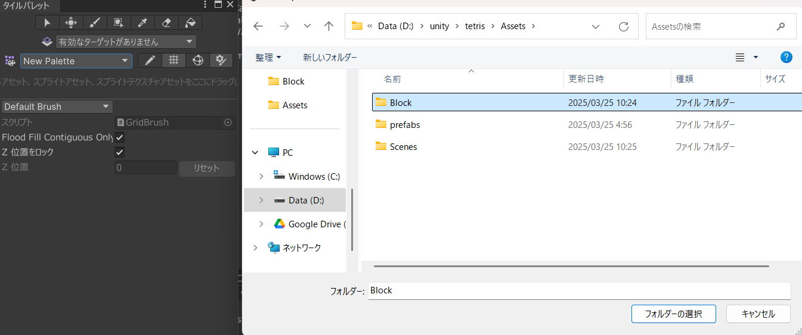
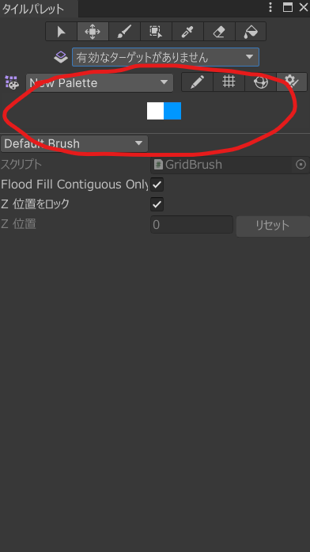
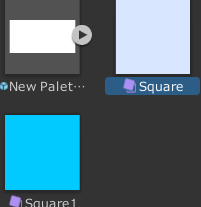
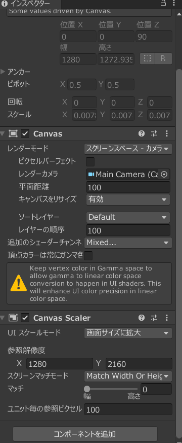

1. ゲームの基本設計（日本語UI対応）
(1) テトリミノ（ブロック）の作成
-
スプライトを用意
上部メニューの [ゲームオブジェクト] → [2D オブジェクト] → [スプライト] → [正方形] を選択して、四角形のスプライトを作成します。
作成されたオブジェクトの名前を「wall」に変更します。
同じように正方形をあと1つ作り、名前を「tetrinimo」にします。
「wall」を選択し、インスペクターウィンドウから[単位毎のピクセル数]を120にします。
同じように「tetorimino」の単位も変更してあげます。
-
タイルパレットの設定
上部メニュー画面から [ウィンドウ] → [2D] → [タイルパレット] を選び、タイルパレットウィンドウを開きます。
[有効なパレットがありません]を押し、[create new palette] → [作成]を選択します。
新たにウィンドウが出るので、右クリックから新しくフォルダーを作り、名前を「Bolck」にします。
 -
ブロックの設定
画像例のように赤丸に部分に向け「tetorimino」と「wall」をドロップアンドドロップします。
Block フォルダー 内の紫色のアイコンがついた「tetorimino」と「wall」を選択すると色を変えることができます。

(2) スクリプトで動作を作る
① テトリミノを移動させる
ヒエラルキーウィンドウから[右クリック] → [空のスプリクト作成] → [gameobject]
gameobjectを選択から[コンポーネントを追加] → 「Tetris」 でスプリクトを追加します。
インスペクターウィンドウのスプリクトをダブルクリックし
以下のコードを記述します：＊コピペ推奨
using System.Collections;
using System.Collections.Generic;
using UnityEngine;
using UnityEngine.Tilemaps;
using TMPro;
public class Tetris : MonoBehaviour
{
public GameObject mainCamera;
public GameObject tileObj;
public TileBase[] tileChip;
public GameObject objNextBlocks;
public float dropInterval;
public float deleteInterval;
private Tilemap tilemap;
private Tilemap nextTilemap;
private Vector2Int fSize;
private TileData[,] tileData;
private TileData[,] nextTileData;
private DropTiles dropTiles;
private IEnumerator DropCoroutine;
private int rndBlock = 0;
private int nextBlock = 0;
public enum GAME_MODE { PLAY, WAIT, GAMEOVER }
public GAME_MODE gameMode;
public TextMeshProUGUI txtScore;
private static readonly Vector3Int[] moveDirs = {
new Vector3Int(1, 0, 0),
new Vector3Int(0, -1, 0),
new Vector3Int(-1, 0, 0),
new Vector3Int(0, 1, 0)
};
void Start() { }
public void IntervalChange(float speed)
{
dropInterval = speed;
deleteInterval = Mathf.Max(speed / 1.5f, 0.5f);
}
public void Tetris_Setup(Vector2Int siz)
{
tilemap = tileObj.GetComponent();
nextTilemap = objNextBlocks.GetComponent();
tilemap.ClearAllTiles();
fSize = siz;
tileData = new TileData[fSize.x, fSize.y];
nextTileData = new TileData[fSize.x, fSize.y];
dropTiles = new DropTiles();
gameMode = GAME_MODE.WAIT;
SetWall();
Camera_Setup();
ViewTiles();
}
public void GameStart()
{
gameMode = GAME_MODE.PLAY;
rndBlock = Random.Range(1, 8);
Generate_DropBlock();
DropCoroutine = Cor_DropBlocks();
StartCoroutine(DropCoroutine);
ViewTiles();
}
IEnumerator Cor_DropBlocks()
{
var gm = GetComponent();
yield return new WaitForSeconds(dropInterval);
while (true)
{
if (Check_CanMove(Vector3Int.down))
Move_DropBlocks(Vector3Int.down);
else
{
foreach (var pos in dropTiles.setPos)
tileData[pos.x, pos.y].blockType = TileType.BLOCK;
gameMode = GAME_MODE.WAIT;
var delCol = CheckDeleteTiles();
if (delCol.Count > 0)
{
DeleteTiles(delCol);
ViewTiles();
gm.Score_Update(delCol.Count);
UpdateScore(gm.nowScore);
yield return new WaitForSeconds(deleteInterval);
SortTiles(delCol);
ViewTiles();
yield return new WaitForSeconds(deleteInterval);
}
Generate_DropBlock();
gameMode = GAME_MODE.PLAY;
}
ViewTiles();
yield return new WaitForSeconds(dropInterval);
}
}
void DeleteTiles(List del)
{
foreach (int y in del)
for (int x = 1; x < fSize.x - 1; x++)
tileData[x, y].DataReset();
}
void SortTiles(List del)
{
for (int y = 1; y < fSize.y - 1; y++)
{
int sortCount = del.FindAll(d => d < y).Count;
for (int x = 1; x < fSize.x - 1; x++)
if (tileData[x, y].blockType == TileType.BLOCK)
nextTileData[x, y - sortCount] = tileData[x, y].Clone();
}
for (int y = 1; y < fSize.y - 1; y++)
{
for (int x = 1; x < fSize.x - 1; x++)
{
tileData[x, y] = nextTileData[x, y].Clone();
nextTileData[x, y].DataReset();
}
}
}
List CheckDeleteTiles()
{
List deleteLine = new List();
for (int y = 1; y < fSize.y - 1; y++)
{
bool full = true;
for (int x = 1; x < fSize.x - 1; x++)
if (tileData[x, y].blockType == TileType.NULL) full = false;
if (full) deleteLine.Add(y);
}
return deleteLine;
}
void Generate_DropBlock()
{
Vector3Int center = new Vector3Int(fSize.x / 2, fSize.y - 3, 0);
nextBlock = rndBlock;
rndBlock = Random.Range(1, 8);
nextTilemap.ClearAllTiles();
foreach (var pos in TileCalculation.blockList(rndBlock, 0))
nextTilemap.SetTile(pos, GetSafeTile(rndBlock));
dropTiles.SetDropData(center, nextBlock, 0);
bool isGameover = false;
foreach (var pos in dropTiles.setPos)
{
if (tileData[pos.x, pos.y].blockType == TileType.BLOCK)
isGameover = true;
tileData[pos.x, pos.y].blockType = TileType.DROP;
tileData[pos.x, pos.y].tileColor = nextBlock;
}
if (isGameover) Process_Gameover();
}
void Process_Gameover()
{
gameMode = GAME_MODE.GAMEOVER;
StopCoroutine(DropCoroutine);
ViewTiles();
StartCoroutine(Cor_BlockGray());
}
IEnumerator Cor_BlockGray()
{
var gm = GetComponent();
yield return new WaitForSeconds(0.5f);
for (int y = 1; y < fSize.y - 1; y++)
{
for (int x = 1; x < fSize.x - 1; x++)
if (tileData[x, y].blockType != TileType.NULL)
tileData[x, y].tileColor = 9;
ViewTiles();
yield return new WaitForSeconds(0.1f);
}
yield return new WaitForSeconds(0.5f);
gm.panelGameover.SetActive(true);
}
public void PushMoveButton(int num)
{
if (gameMode == GAME_MODE.PLAY && Check_CanMove(moveDirs[num]))
{
Move_DropBlocks(moveDirs[num]);
ViewTiles();
}
}
bool Check_CanMove(Vector3Int moveVec)
{
foreach (var pos in dropTiles.setPos)
{
var checkPos = pos + moveVec;
var type = tileData[checkPos.x, checkPos.y].blockType;
if (type == TileType.WALL || type == TileType.BLOCK)
return false;
}
return true;
}
void Move_DropBlocks(Vector3Int moveVec)
{
foreach (var pos in dropTiles.setPos)
tileData[pos.x, pos.y].blockType = TileType.NULL;
dropTiles.MoveCenter(moveVec);
foreach (var pos in dropTiles.setPos)
{
tileData[pos.x, pos.y].blockType = TileType.DROP;
tileData[pos.x, pos.y].tileColor = dropTiles.shapeNum;
}
}
public void Push_RotationButton(int rotDirection)
{
int rot = (dropTiles.rotNum + rotDirection) % 4;
if (dropTiles.shapeNum == 2) rot = 0;
else if (dropTiles.shapeNum == 4 || dropTiles.shapeNum == 5 || dropTiles.shapeNum == 7) rot %= 2;
var testList = TileCalculation.blockList(dropTiles.shapeNum, rot);
var posList = testList.ConvertAll(p => p + dropTiles.centerPos);
if (Check_CanRotate(posList))
{
foreach (var pos in dropTiles.setPos)
tileData[pos.x, pos.y].DataReset();
dropTiles.SetDropData(dropTiles.centerPos, dropTiles.shapeNum, rot);
foreach (var pos in dropTiles.setPos)
{
tileData[pos.x, pos.y].blockType = TileType.DROP;
tileData[pos.x, pos.y].tileColor = dropTiles.shapeNum;
}
ViewTiles();
}
}
bool Check_CanRotate(List posList)
{
foreach (var pos in posList)
{
if (pos.x < 0 || pos.y < 0 || pos.x >= fSize.x || pos.y >= fSize.y)
return false;
var type = tileData[pos.x, pos.y].blockType;
if (type == TileType.WALL || type == TileType.BLOCK)
return false;
}
return true;
}
void SetWall()
{
for (int y = 0; y < fSize.y; y++)
{
for (int x = 0; x < fSize.x; x++)
{
tileData[x, y] = new TileData();
nextTileData[x, y] = new TileData();
tileData[x, y].DataReset();
nextTileData[x, y].DataReset();
if (x == 0 || y == 0 || x == fSize.x - 1 || y == fSize.y - 1)
tileData[x, y].blockType = TileType.WALL;
}
}
}
void ViewTiles()
{
for (int y = 0; y < fSize.y; y++)
{
for (int x = 0; x < fSize.x; x++)
{
var pos = new Vector3Int(x, y, 0);
var color = tileData[x, y].tileColor;
tilemap.SetTile(pos, tileData[x, y].blockType == TileType.NULL ? null : GetSafeTile(color));
}
}
}
TileBase GetSafeTile(int index)
{
return (index >= 0 && index < tileChip.Length) ? tileChip[index] : null;
}
void Camera_Setup()
{
var cam = mainCamera.GetComponent();
cam.orthographicSize = fSize.y / 2 + 1;
var center = (tilemap.GetCellCenterWorld(Vector3Int.zero) + tilemap.GetCellCenterWorld(new Vector3Int(fSize.x - 1, fSize.y - 1, 0))) / 2;
mainCamera.transform.position = new Vector3(center.x, center.y, -10);
objNextBlocks.transform.position = tilemap.GetCellCenterWorld(new Vector3Int(fSize.x + 1, fSize.y - 2, 0));
objNextBlocks.transform.localScale = new Vector3(0.5f, 0.5f, 1);
}
void UpdateScore(int score)
{
if (txtScore != null)
txtScore.text = "Score: " + score;
}
}
public enum TileType { NULL, WALL, BLOCK, DROP }
public class TileData
{
public TileType blockType;
public int tileColor;
public void DataReset() { blockType = TileType.NULL; tileColor = 0; }
public TileData Clone() => (TileData)MemberwiseClone();
}
public class DropTiles
{
public Vector3Int centerPos;
public int shapeNum;
public int rotNum;
public List setPos = new List();
public void SetDropData(Vector3Int center, int type, int rot)
{
centerPos = center;
shapeNum = type;
rotNum = rot;
setPos = TileCalculation.blockList(type, rot).ConvertAll(p => p + center);
}
public void MoveCenter(Vector3Int moveVec) => SetDropData(centerPos + moveVec, shapeNum, rotNum);
}
public static class TileCalculation
{
public static List blockList(int shapeNum, int rotNum)
{
List pos = new List();
switch (shapeNum)
{
case 1: pos.AddRange(new[] {
new Vector3Int(-1, 1, 0),
new Vector3Int(-1, 0, 0),
new Vector3Int(0, 0, 0),
new Vector3Int(1, 0, 0)}); break;
case 2: pos.AddRange(new[] {
new Vector3Int(1, 1, 0),
new Vector3Int(1, 0, 0),
new Vector3Int(0, 1, 0),
new Vector3Int(0, 0, 0)}); break;
case 3: pos.AddRange(new[] {
new Vector3Int(-1, 0, 0),
new Vector3Int(0, 0, 0),
new Vector3Int(1, 0, 0),
new Vector3Int(1, 1, 0)}); break;
case 4: pos.AddRange(new[] {
new Vector3Int(-1, 1, 0),
new Vector3Int(-1, 0, 0),
new Vector3Int(0, 0, 0),
new Vector3Int(0, -1, 0)}); break;
case 5: pos.AddRange(new[] {
new Vector3Int(0, 1, 0),
new Vector3Int(0, 0, 0),
new Vector3Int(-1, 0, 0),
new Vector3Int(-1, -1, 0)}); break;
case 6: pos.AddRange(new[] {
new Vector3Int(-1, 0, 0),
new Vector3Int(0, 0, 0),
new Vector3Int(1, 0, 0),
new Vector3Int(0, 1, 0)}); break;
case 7: pos.AddRange(new[] {
new Vector3Int(-1, 0, 0),
new Vector3Int(0, 0, 0),
new Vector3Int(1, 0, 0),
new Vector3Int(2, 0, 0)}); break;
}
return rotPos(Vector3Int.zero, pos, rotNum);
}
public static List rotPos(Vector3Int center, List posList, int rotCount)
{
List rotList = new List();
rotCount %= 4;
foreach (var pos in posList)
{
Vector3Int checkP = pos - center;
Vector3Int nextP = rotCount switch
{
1 => new Vector3Int(-checkP.y, checkP.x, 0),
2 => new Vector3Int(-checkP.x, -checkP.y, 0),
3 => new Vector3Int(checkP.y, -checkP.x, 0),
_ => new Vector3Int(checkP.x, checkP.y, 0),
};
rotList.Add(nextP + center);
}
return rotList;
}
}
② ゲームシステムの作成
ゲームシステムを作ります。
ヒエラルキーウィンドウから[gameobject] → [コンポーネントを追加] → 「GameManager」を作成
インスペクターウィンドウのスプリクトをダブルクリックしコードを追加します。
using System.Collections;
using System.Collections.Generic;
using UnityEngine;
using UnityEngine.UI;
using TMPro;
public class GameManager : MonoBehaviour
{
//ゲームオーバー画面
public GameObject panelGameover;
//レベル、スコアのテキスト
public GameObject objTextScore;
TextMeshProUGUI txtScore;
//数値管理
public int nowScore;
public int deleteLines;
public float gameSpeed;
const float gameSpeed_Default = 0.4f;
Vector2Int frameSize = new Vector2Int(12, 22);
void Start()
{
//セットアップ
panelGameover.SetActive(false);
txtScore = objTextScore.GetComponent();
deleteLines = 0;
nowScore = 0;
gameSpeed = gameSpeed_Default;
txtScore.text = nowScore.ToString();
//テトリスゲームの初期設定
var tetris = this.GetComponent();
tetris.Tetris_Setup(frameSize);
tetris.IntervalChange(gameSpeed);
//開始
Push_GameStart();
}
float pushDArrowCount = 0;
bool isPushing = false;
private void Update()
{
var tetris = this.GetComponent();
if (Input.GetKeyDown("z"))
{
tetris.Push_RotationButton(1);
}
if (Input.GetKeyDown("x"))
{
tetris.Push_RotationButton(3);
}
if (Input.GetKeyDown(KeyCode.DownArrow))
{
tetris.PushMoveButton(1);
isPushing = true;
}
if (Input.GetKeyUp(KeyCode.DownArrow))
{
isPushing = false;
pushDArrowCount = 0;
}
if (isPushing)
{
pushDArrowCount++;
if (pushDArrowCount > 50)
{
tetris.PushMoveButton(1);
pushDArrowCount = 45;
}
}
if (Input.GetKeyDown(KeyCode.RightArrow))
{
tetris.PushMoveButton(0);
}
if (Input.GetKeyDown(KeyCode.LeftArrow))
{
tetris.PushMoveButton(2);
}
}
public void Push_GameStart()
{
var tetris = this.GetComponent();
tetris.GameStart();
}
public void Score_Update(int deleteCount)
{
//スコア加算＝レベル×消去列倍率
nowScore += PlusScore(deleteCount) * 10;
txtScore.text = nowScore.ToString();
}
float SpeedSetting(int lv)
{
float speed = gameSpeed_Default - 0.1f*lv;
if (speed < 0.2f) { speed = 0.2f; }
return speed;
}
//消した列によるスコア加算値倍率
int PlusScore(int count)
{
int bai = 1;
switch (count)
{
case 2:
bai = 3;
break;
case 3:
bai = 6;
break;
case 4:
bai = 10;
break;
}
return bai;
}
} (4) UIの作成
ヒエラルキーウィンドウ → [UI] → [キャンバス]を選択
ヒエラルキーウィンドウからキャンバスを選択し、[インスペクターウィンドウ] → [Canvas] → [レンダーモード] → [スクリーンスペースカメラ]を選択。
同じくキャンバスのインスペクターウィンドウから[レンダーカメラ]にmaincameraをアタッチ
また同じくキャンバスのインスペクターウィンドウから[CanvasScaler] → [UIスケールモード] → [画面サイズに拡大]
ヒエラルキーウィンドウからキャンバスを右クリックし、[UI] → [テキスト(TMP)]これがスコアテキストになります。
次にゲームオーバー画面を作ります。
ヒエラルキーウィンドウからキャンバスを右クリックし、[UI] → [パネル]を選択。
作成したパネルを右クリックし、新たにテキスト(TMP)を作成。テキストをGAMEOVERに書き換えます。
テキスト類の数値はお好みで
(5) アタッチと設定
お疲れ様です。後はアタッチをするだけです。
画像のようにアタッチをしてください。